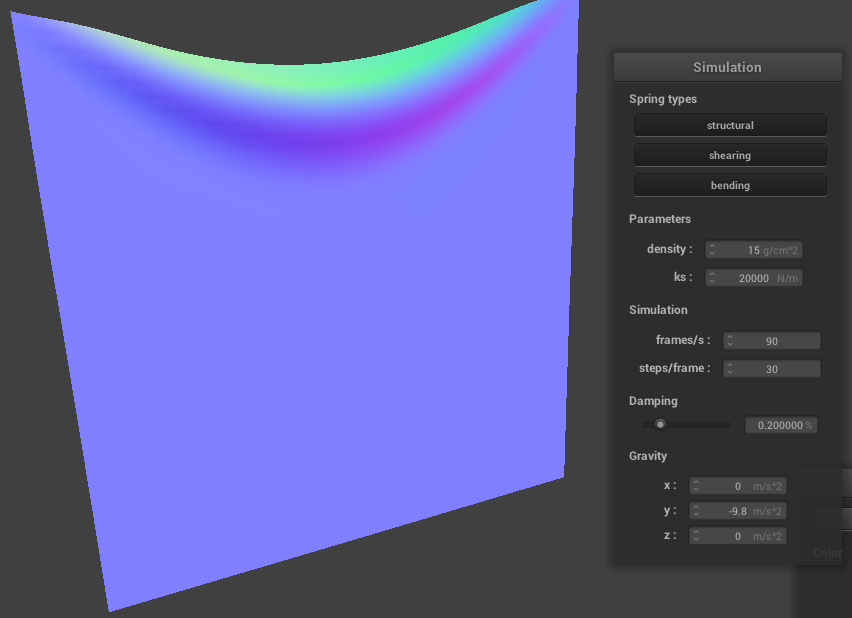

INSERT OVERVIEW HERE
First we create the mesh associated with a piece of cloth. To do this, we first iterate through all points in the mesh, creating a matrix of boolean values that store if the visited point is pinned or not. We then iterate through all the points again creating point masses at evenly spaced points along the mesh. Lastly, we iterate through all the points again, creating springs between a point mass and its neighbors, if a qualifying neighbor exists. The following are screen shots of such a mesh, with all constraints, without shearing constraints, and with only shearing constraints respectivley.


 \
\
Here start to simulate the movement of the cloth falling by implementing Numerical Verlet Integration along with some basic constraints on the springs to prevent unrealistic stretching over short time spans. First we show how the cloth looks on the default settings in a resting state.
The two images below show the difference between low and high density settings respectivley. On a low density setting, the cloth falls much slower and appears to be a lot more floaty as it falls, and when at rest seems to be under less tension than the cloth at default settings. On a higher density setting (200g/cm^2), the cloth falls much faster and feels heavier, this also however introduces a lot more jittering in the simulation, where the cloth jolts and stutters forever.
The next two images show the difference between low and high spring constants. Similar to a high density cloth, a low spring constant experiences some stuttering, the frequency of which is much smaller but the effect larger, where the cloth suddenly jumps massivley. With a very high spring constant, the cloth appears mostly normal, but has much less folding and creasing you would see in real cloth.
These last images show the difference between 0% damping and 100% damping respectivley. On 0% damping, the cloth swings back and forth as if blown by the wind, this makes sense as the damping was contributing to simulating the loss of energy in the system. On 100% damping, the cloth moves very slowly and settles in place near instantly, as there is now no energy in the system at all.